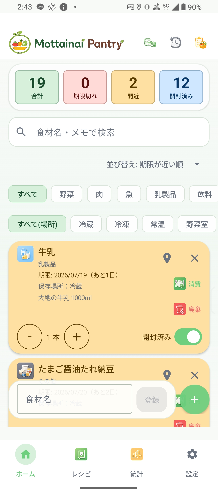
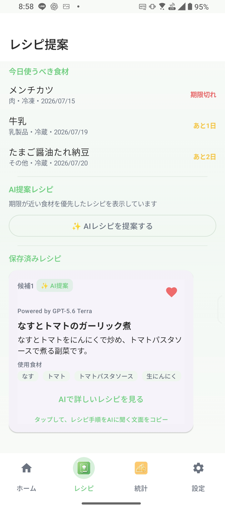
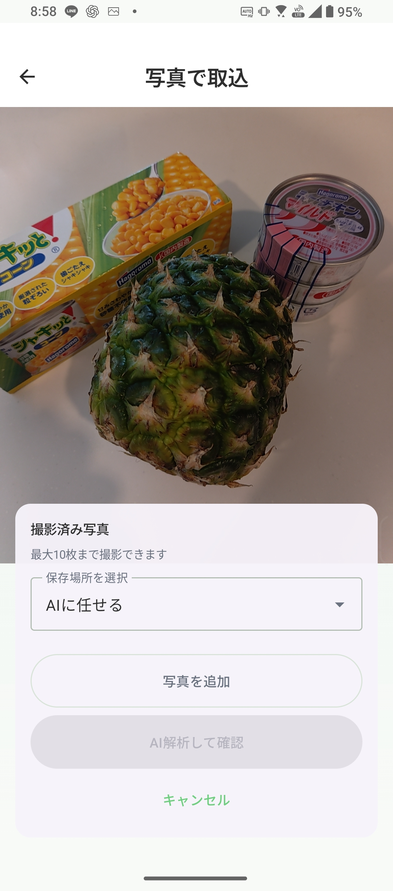
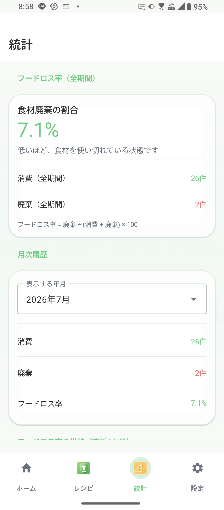

食材を最後まで、おいしく。
Mottainai Pantry は、Mottainai Seedsが提供する第一弾Androidアプリです。家庭の食品ロスを減らすために、食材管理をやさしく支援します。
期限管理、バーコード、OCR、AIレシピ提案、レシピ管理で食材を使い切る習慣を支援します。
主な機能
食材管理
食材の登録、編集、消費、削除、復元をまとめて管理できます。単位順やカテゴリアイコンも見やすく整え、ピン留めした食材は一覧の上部に表示できます。
登録支援
バーコードや賞味期限撮影により、入力の手間を減らします。Open Food Factsで商品情報を補完し、見つからない場合の手入力や上書き確認もわかりやすく案内します。
AIレシピ
登録した食材をもとに、ChatGPT / Gemini と多言語対応のAIがレシピ案を提案します。保存済みレシピ、ローカル候補、避けたい食材にも対応します。
統計
フードロス率、履歴、カテゴリ別件数を見える化し、統計のカテゴリ重複を避けながら継続を支援します。
買い物リスト
履歴から再購入したい食材を追加できます。まだ残っている食材があれば、重複買いを防ぐためにお知らせします。
カテゴリ管理
標準カテゴリに加えて、自分の暮らしに合わせたカテゴリを追加・編集・削除できます。
バックアップ
食材、履歴、保存済みレシピ、買い物リスト、苦手な食材、ユーザー定義カテゴリをバックアップ/リストアできます。14日通知で保存のタイミングも気づきやすくしています。
期限通知
期限が近い食材に気づきやすくし、使い切りをやさしくサポートします。
スクリーンショット

食材をまとめて管理。

期限が近い食材を活用したレシピをAIが提案。

写真から複数の食材をAIがまとめて認識。

フードロスを見える化。
AI機能について
AIレシピ提案を利用する場合は、ご自身で取得したOpenAIまたはGoogle Gemini APIキーが必要です。
APIキーはAndroid Keystoreを利用して端末内で暗号化保存され、開発者が取得することはありません。詳細はプライバシーポリシーをご確認ください。
ダウンロード
Mottainai Pantryは現在、Google Play クローズドテスト中です。v1.2.1では、AIレシピ提案、写真取込、履歴復元をより安定して利用できるよう改善しました。